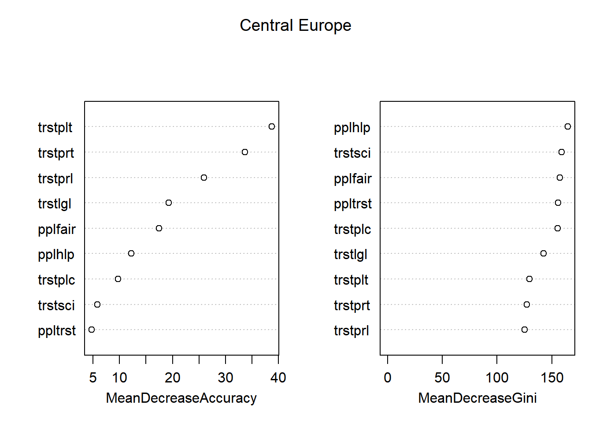

=== Confusion Matrix for Central Europe ===
Actual
Predicted High Low Medium
High 78 19 42
Low 21 74 44
Medium 45 51 58
Accuracy for Central Europe: 48.61%
Decision Tree for Central Europe :

=== PRUNED Confusion Matrix for Central Europe ===
Actual
Predicted High Low Medium
High 71 15 31
Low 21 74 44
Medium 52 55 69
Pruned Accuracy for Central Europe: 49.54%
Pruned Tree for Central Europe :
Central Europe Random Forest Variable Importance High Low Medium MeanDecreaseAccuracy MeanDecreaseGini
ppltrst 4.0999688 0.08054297 2.959753 4.872513 156.8066
pplhlp 12.9452133 -2.32703289 2.048990 12.607562 165.3941
pplfair 15.2396092 -3.70057592 1.254504 14.824453 157.8610
trstprl 22.8736800 5.32600081 6.195869 24.697960 125.9281
trstlgl 18.0948691 8.68589627 1.262577 19.512029 143.3735
trstplc 9.2426589 7.01386954 1.439649 10.714278 153.7541
trstplt 41.2376497 -9.11732413 -13.950927 38.058867 130.4949
trstprt 36.2896715 -4.53465454 -12.021190 33.265963 129.5628
trstsci 0.3086722 19.40376864 14.772521 7.227775 160.5054